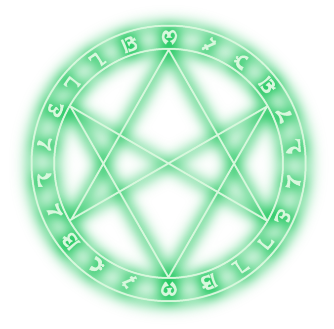

VOCÊ ENTRA EM UMA TAVERNA SUJA, SOMBRIA E CHEIO DE BEBADOS...
OU SÃO AVENTUREIROS?
Transe de Éter
[Você] ( Entra olhando ao redor, em alerta e com a mão na sua arma) - Então e nessa taverna que teho acesso ao Transe de Éter?
[Taberneiro] ( Com cicatrizes na cara e sem um braço, apenas acena com a cabeça para uma mesa onde está sentado um mago das sombras com um capuz e um grande cajado encima da mesa)
[Você] ( Senta na mesa e diz) - Diga-me como posso ter acesso aos Ecos ou juro que está taverna não estará de pé ate amanhã
[O mago murmura palavras ininteligíveis. Uma luz opaca envolve o guerreiro, que cai de joelhos, olhos vidrados. Sua consciência é arrastada para um plano etéreo, e ele vê pergaminhos flutuantes com mensagens de outros aventureiros.]
